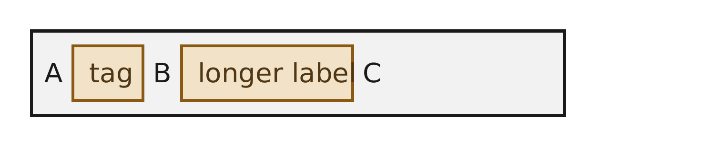
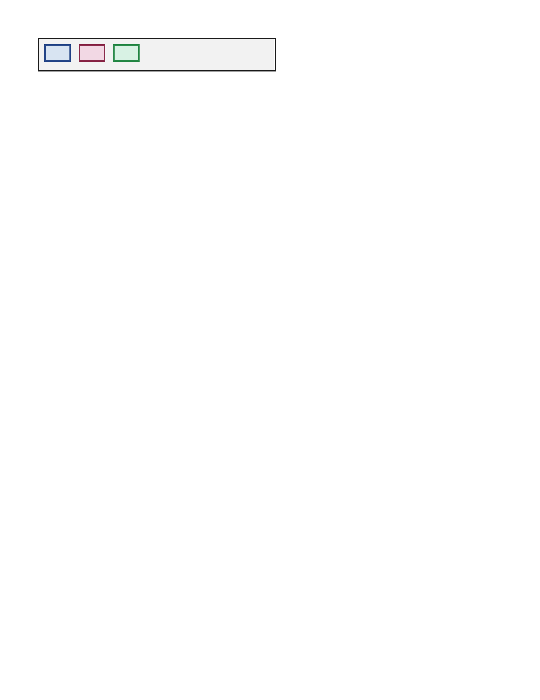
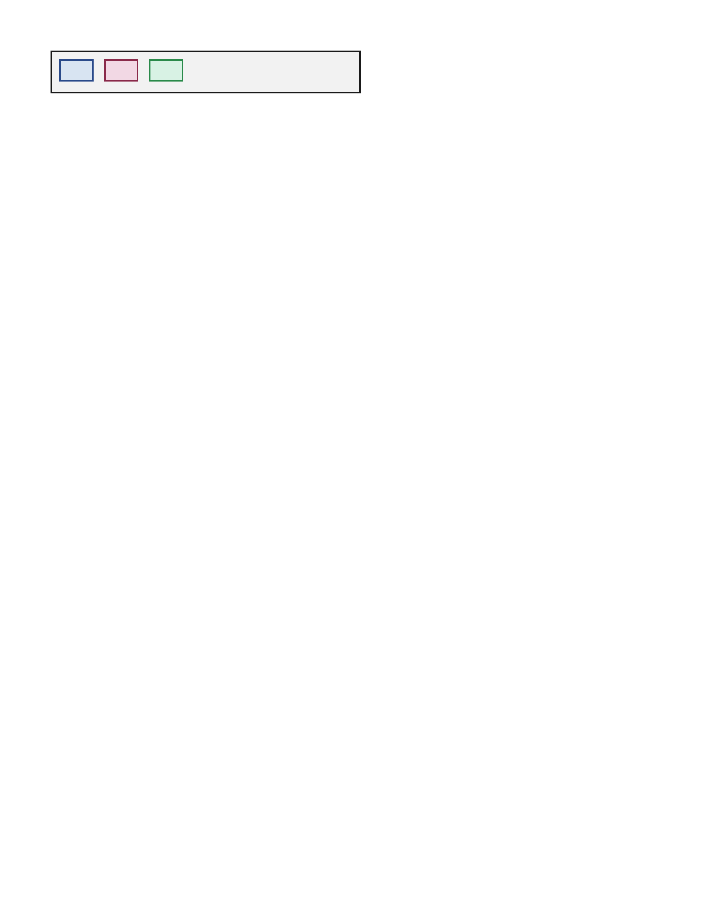
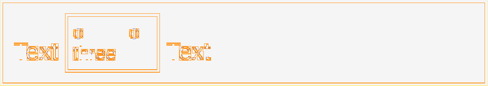

inline-block — 75.00% all categories ↑
PARTIAL 5.97% inline-text-inline-block-shrink-to-fit · shrink-to-fit · REALGeometryShift+1.0px Bmissing 0.6%ΔE 4.8shift (0.0,-0.5)px

diff colours:MissingExtraColorErrGeomShiftAA edgeMatchAA / edge-jitter = cross-rasterizer measurement ceiling, not a bug.
why: content shifted (0.0,-0.5)px beyond page-origin calibration
Inline-blocks with no explicit width use shrink-to-fit sizing, hugging their content (CSS2 §10.3.9).
regions (6)
| class | bbox (CSS px) | area% | magnitude | reason |
|---|---|---|---|---|
| GeometryShift | 2,2 → 358,51 | 1.87 | shift(0.0,-0.2) | content shifted (0.0,-0.2)px beyond page-origin calibration |
| GeometryShift | 97,10 → 214,43 | 0.64 | shift(0.0,-0.2) | content shifted (0.0,-0.2)px beyond page-origin calibration |
| Missing | 0,53 → 360,53 | 0.60 | content clipped/truncated (0.6% missing) | |
| GeometryShift | 99,12 → 212,41 | 0.43 | shift(0.0,-0.4) | content shifted (0.0,-0.4)px beyond page-origin calibration |
| GeometryShift | 26,10 → 75,43 | 0.30 | shift(0.1,-0.2) | content shifted (0.1,-0.2)px beyond page-origin calibration |
| GeometryShift | 28,40 → 73,41 | 0.15 | shift(0.0,-0.5) | content shifted (0.0,-0.5)px beyond page-origin calibration |
source · cases/inline-text/inline-text-inline-block-shrink-to-fit.html
1<!DOCTYPE html>
2<html lang="en">
3<head>
4<meta charset="utf-8">
5<style>
6 * { margin: 0; box-sizing: border-box; }
7 html, body { background: #ffffff; }
8 .line {
9 margin: 20px;
10 padding: 8px;
11 width: 360px;
12 border: 2px solid #1a1a1a;
13 background: #f2f2f2;
14 font-family: sans-serif;
15 font-size: 18px;
16 color: #1a1a1a;
17 }
18 /* An inline-block with no explicit width uses shrink-to-fit: the box
19 hugs its content width (CSS2 §10.3.9). */
20 .ib {
21 display: inline-block;
22 background: #f2e2c8;
23 border: 2px solid #8a5a14;
24 padding: 4px 10px;
25 color: #4f3614;
26 }
27</style>
28</head>
29<body>
30 <div class="line">A <span class="ib">tag</span> B <span class="ib">longer label</span> C</div>
31</body>
32</html>
PARTIAL 4.52% inline-text-multiple-inline-blocks · multiple · REALGeometryShift+1.0px Bmissing 0.6%shift (0.0,-0.4)px


diff colours:MissingExtraColorErrGeomShiftAA edgeMatchAA / edge-jitter = cross-rasterizer measurement ceiling, not a bug.
why: content shifted (0.0,-0.4)px beyond page-origin calibration
Several inline-blocks flow left-to-right on one line, separated by inter-element whitespace.
regions (6)
| class | bbox (CSS px) | area% | magnitude | reason |
|---|---|---|---|---|
| GeometryShift | 2,2 → 358,49 | 2.57 | shift(0.0,-0.4) | content shifted (0.0,-0.4)px beyond page-origin calibration |
| Missing | 0,51 → 360,51 | 0.63 | content clipped/truncated (0.6% missing) | |
| GeometryShift | 0,0 → 360,0 | 0.63 | shift(0.0,0.3) | content shifted (0.0,0.3)px beyond page-origin calibration |
| GeometryShift | 10,10 → 50,36 | 0.12 | shift(0.1,0.2) | content shifted (0.1,0.2)px beyond page-origin calibration |
| GeometryShift | 114,10 → 154,36 | 0.12 | shift(0.1,0.2) | content shifted (0.1,0.2)px beyond page-origin calibration |
| GeometryShift | 12,12 → 48,34 | 0.10 | shift(0.1,0.2) | content shifted (0.1,0.2)px beyond page-origin calibration |
source · cases/inline-text/inline-text-multiple-inline-blocks.html
1<!DOCTYPE html>
2<html lang="en">
3<head>
4<meta charset="utf-8">
5<style>
6 * { margin: 0; box-sizing: border-box; }
7 html, body { background: #ffffff; }
8 .line {
9 margin: 20px;
10 padding: 8px;
11 width: 360px;
12 border: 2px solid #1a1a1a;
13 background: #f2f2f2;
14 font-family: sans-serif;
15 font-size: 18px;
16 color: #1a1a1a;
17 }
18 /* Several inline-blocks flow left-to-right on the same line, separated by
19 explicit margins, all sharing the text baseline. */
20 .chip {
21 display: inline-block;
22 width: 40px;
23 height: 26px;
24 margin-right: 12px;
25 vertical-align: baseline;
26 }
27 .a { background: #d8e4f2; border: 2px solid #2a4a8a; }
28 .b { background: #f2d8e4; border: 2px solid #8a2a4a; }
29 .c { background: #d8f2e4; border: 2px solid #2a8a4a; }
30</style>
31</head>
32<body>
33 <div class="line"><span class="chip a"></span><span class="chip b"></span><span class="chip c"></span></div>
34</body>
35</html>
PASS 3.64% inline-text-inline-block-baseline-multiline · baseline-multilineGeometryShift+0.6px BΔE 4.9shift (0.2,-0.6)px

diff colours:MissingExtraColorErrGeomShiftAA edgeMatchAA / edge-jitter = cross-rasterizer measurement ceiling, not a bug.
why: content shifted (0.2,-0.6)px beyond page-origin calibration
Multi-line inline-block aligns its LAST line's baseline to the surrounding text baseline (CSS2 §10.8.1).
regions (6)
| class | bbox (CSS px) | area% | magnitude | reason |
|---|---|---|---|---|
| GeometryShift | 2,2 → 358,62 | 1.56 | shift(0.0,-0.2) | content shifted (0.0,-0.2)px beyond page-origin calibration |
| GeometryShift | 48,10 → 118,54 | 0.35 | shift(0.1,-0.2) | content shifted (0.1,-0.2)px beyond page-origin calibration |
| GeometryShift | 50,12 → 116,52 | 0.24 | shift(0.1,-0.4) | content shifted (0.1,-0.4)px beyond page-origin calibration |
| GeometryShift | 132,34 → 141,45 | 0.13 | ΔRGB(-16,-16,-16) shift(0.2,-0.5) | content shifted (0.2,-0.5)px beyond page-origin calibration |
| GeometryShift | 38,32 → 43,45 | 0.10 | ΔRGB(18,18,18) shift(0.2,-0.3) | content shifted (0.2,-0.3)px beyond page-origin calibration |
| GeometryShift | 20,39 → 28,45 | 0.08 | ΔRGB(-14,-14,-14) shift(0.0,-0.5) | content shifted (0.0,-0.5)px beyond page-origin calibration |
source · cases/inline-text/inline-text-inline-block-baseline-multiline.html
1<!DOCTYPE html>
2<html lang="en">
3<head>
4<meta charset="utf-8">
5<style>
6 * { margin: 0; box-sizing: border-box; }
7 html, body { background: #ffffff; }
8 .line {
9 margin: 20px;
10 padding: 8px;
11 width: 360px;
12 border: 2px solid #1a1a1a;
13 background: #f2f2f2;
14 font-family: sans-serif;
15 font-size: 18px;
16 color: #1a1a1a;
17 }
18 /* An inline-block with MULTIPLE in-flow lines aligns its LAST line's
19 baseline to the surrounding text baseline (CSS2 §10.8.1). */
20 .ib {
21 display: inline-block;
22 width: 70px;
23 background: #d8e4f2;
24 border: 2px solid #2a4a8a;
25 padding: 4px;
26 font-size: 14px;
27 color: #16294f;
28 }
29</style>
30</head>
31<body>
32 <div class="line">Text <span class="ib">one two three</span> Text</div>
33</body>
34</html>
PASS 2.30% inline-text-inline-block-baseline · baseline-alignmentGeometryShift−0.3px LΔE 5.0shift (0.2,0.6)px


diff colours:MissingExtraColorErrGeomShiftAA edgeMatchAA / edge-jitter = cross-rasterizer measurement ceiling, not a bug.
why: content shifted (0.2,0.6)px beyond page-origin calibration
Inline-block with content aligns its last-line baseline to the surrounding text baseline.
regions (6)
| class | bbox (CSS px) | area% | magnitude | reason |
|---|---|---|---|---|
| GeometryShift | 2,2 → 298,68 | 0.55 | shift(0.1,0.3) | content shifted (0.1,0.3)px beyond page-origin calibration |
| GeometryShift | 48,10 → 108,60 | 0.17 | shift(0.1,0.2) | content shifted (0.1,0.2)px beyond page-origin calibration |
| GeometryShift | 50,12 → 106,58 | 0.15 | shift(0.1,0.2) | content shifted (0.1,0.2)px beyond page-origin calibration |
| GeometryShift | 298,2 → 298,68 | 0.10 | shift(0.3,-0.0) | content shifted (0.3,-0.0)px beyond page-origin calibration |
| GeometryShift | 20,45 → 28,51 | 0.09 | ΔRGB(14,14,14) shift(0.0,0.5) | content shifted (0.0,0.5)px beyond page-origin calibration |
| GeometryShift | 123,45 → 131,51 | 0.09 | ΔRGB(14,14,14) shift(0.0,0.5) | content shifted (0.0,0.5)px beyond page-origin calibration |
source · cases/inline-text/inline-text-inline-block-baseline.html
1<!DOCTYPE html>
2<html lang="en">
3<head>
4<meta charset="utf-8">
5<style>
6 * { margin: 0; box-sizing: border-box; }
7 html, body { background: #ffffff; }
8 .line {
9 margin: 20px;
10 padding: 8px;
11 width: 300px;
12 border: 2px solid #1a1a1a;
13 background: #f2f2f2;
14 font-family: sans-serif;
15 font-size: 18px;
16 color: #1a1a1a;
17 }
18 /* An inline-block with in-flow content aligns its last line's baseline
19 to the surrounding text baseline. */
20 .ib {
21 display: inline-block;
22 width: 60px;
23 height: 50px;
24 padding-top: 24px;
25 background: #d8e4f2;
26 border: 2px solid #2a4a8a;
27 font-size: 16px;
28 color: #16294f;
29 }
30</style>
31</head>
32<body>
33 <div class="line">Text <span class="ib">bb</span> Text</div>
34</body>
35</html>